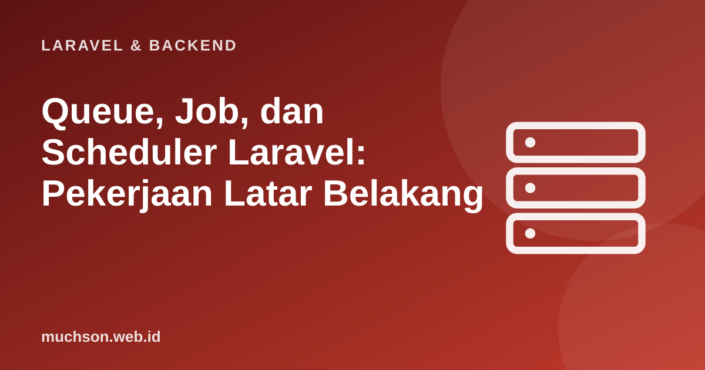

Beranda › Artikel › Laravel & Backend
Laravel & BackendQueue, Job, dan Scheduler Laravel: Pekerjaan Latar Belakang
Pengguna menekan tombol "Daftar" lalu menunggu sembilan detik karena server mengirim surel sambutan, membuat PDF, dan memanggil layanan pihak ketiga sebelum merespons. Itu bukan pengalaman yang baik, dan satu layanan yang lambat bisa membuat seluruh permintaan gagal. Solusinya: kerjakan yang lambat di latar belakang lewat antrean, dan respons pengguna seketika.
Sebaiknya sudah paham: dasar Laravel, Eloquent

Setelah membaca dan mencoba materi ini, Anda mampu:
- menjelaskan manfaat antrean dan kapan memakainya
- membuat job, mendispatch, dan menjalankan worker
- mengatur percobaan ulang, backoff, dan menangani job gagal
- menulis job yang idempoten dan aman dijalankan ulang
- memakai scheduler Laravel menggantikan banyak entri cron
Kode PHP/Laravel di artikel ini mengikuti dokumentasi Laravel (versi 11 dan seterusnya, PHP 8.2 atau lebih baru). Bagian "cara kerja di balik layar" dijalankan sungguhan dengan Python atau JavaScript agar konsepnya dapat dibuktikan.
Mengapa antrean
- Respons cepat: pengguna tidak menunggu pekerjaan lambat (surel, PDF, gambar, impor).
- Ketahanan: bila layanan luar gagal, job dicoba ulang tanpa menggagalkan permintaan pengguna.
- Pemerataan beban: lonjakan permintaan menumpuk di antrean dan diproses sesuai kapasitas worker.
- Skalabilitas: tambah worker untuk mempercepat pemrosesan.
Membuat dan mendispatch job
<?php
// php artisan make:job KirimSurelSambutan
namespace App\Jobs;
use App\Models\User;
use App\Mail\SambutanMail;
use Illuminate\Bus\Queueable;
use Illuminate\Contracts\Queue\ShouldQueue;
use Illuminate\Foundation\Bus\Dispatchable;
use Illuminate\Queue\InteractsWithQueue;
use Illuminate\Queue\SerializesModels;
use Illuminate\Support\Facades\Mail;
class KirimSurelSambutan implements ShouldQueue
{
use Dispatchable, InteractsWithQueue, Queueable, SerializesModels;
public int $tries = 4; // maksimal percobaan
public array $backoff = [10, 60, 300]; // jeda antar percobaan (detik): 10 dtk, 1 mnt, 5 mnt
public int $timeout = 30; // detik
public function __construct(public User $user) {} // model diserialisasi hanya sebagai ID
public function handle(): void
{
Mail::to($this->user)->send(new SambutanMail($this->user));
}
public function failed(\Throwable $e): void
{
// dipanggil setelah semua percobaan habis: catat, beri tahu admin, dsb.
}
}
// Di controller: dispatch dan LANGSUNG kembali
KirimSurelSambutan::dispatch($user);
KirimSurelSambutan::dispatch($user)->onQueue('surel')->delay(now()->addMinutes(5));
return redirect('/dasbor')->with('sukses', 'Selamat datang! Surel sambutan sedang dikirim.');php artisan queue:table && php artisan migrate # antrean berbasis basis data (bawaan Laravel 11)
php artisan queue:work # menjalankan worker
php artisan queue:work --queue=surel,default # prioritas antrean
php artisan queue:failed # daftar job gagal
php artisan queue:retry all # coba ulang yang gagal
php artisan queue:restart # muat ulang worker setelah deploy (kode baru)Retry, backoff, dan job gagal: peragaan
Berikut simulasi worker dengan percobaan ulang dan backoff eksponensial, agar perilaku antrean yang andal terlihat jelas.
// Simulasi worker antrean: retry dengan backoff dan tabel job gagal
async function pekerjaanTakStabil(job, percobaanKe) {
// layanan surel "mati" pada dua percobaan pertama untuk job #2, dan selalu mati untuk job #3
if (job.id === 2 && percobaanKe <= 2) throw new Error('layanan surel timeout');
if (job.id === 3) throw new Error('alamat surel tidak valid');
return 'terkirim ke ' + job.penerima;
}
const antrean = [{ id: 1, penerima: 'ani@contoh.id' }, { id: 2, penerima: 'budi@contoh.id' }, { id: 3, penerima: 'salah@' }];
const backoff = [10, 60, 300]; // detik (disimulasikan, tidak benar-benar menunggu)
const gagal = [];
(async () => {
for (const job of antrean) {
let berhasil = false;
for (let k = 1; k <= 4 && !berhasil; k++) {
try {
const hasil = await pekerjaanTakStabil(job, k);
console.log('job #' + job.id, 'percobaan', k, '-> OK:', hasil);
berhasil = true;
} catch (e) {
const jeda = backoff[k - 1];
console.log('job #' + job.id, 'percobaan', k, '-> GAGAL:', e.message + (k < 4 ? ' (coba lagi dalam ' + jeda + ' dtk)' : ''));
}
}
if (!berhasil) gagal.push({ id: job.id, alasan: 'melebihi 4 percobaan' });
}
console.log('tabel failed_jobs:', JSON.stringify(gagal));
})();job #1 percobaan 1 -> OK: terkirim ke ani@contoh.id
job #2 percobaan 1 -> GAGAL: layanan surel timeout (coba lagi dalam 10 dtk)
job #2 percobaan 2 -> GAGAL: layanan surel timeout (coba lagi dalam 60 dtk)
job #2 percobaan 3 -> OK: terkirim ke budi@contoh.id
job #3 percobaan 1 -> GAGAL: alamat surel tidak valid (coba lagi dalam 10 dtk)
job #3 percobaan 2 -> GAGAL: alamat surel tidak valid (coba lagi dalam 60 dtk)
job #3 percobaan 3 -> GAGAL: alamat surel tidak valid (coba lagi dalam 300 dtk)
job #3 percobaan 4 -> GAGAL: alamat surel tidak valid
tabel failed_jobs: [{"id":3,"alasan":"melebihi 4 percobaan"}]Menulis job yang aman dijalankan ulang (idempoten)
Antrean menjamin job dijalankan setidaknya sekali, bukan tepat sekali. Job bisa berjalan dua kali (worker mati di tengah, percobaan ulang, timeout). Job yang mengirim surel atau menagih pembayaran harus idempoten: menjalankannya dua kali tidak menimbulkan efek ganda.
// Idempoten: periksa "sudah dikerjakan?" sebelum melakukan efek samping
const sudahDikirim = new Set(); // di Laravel: kolom di basis data atau kunci unik
let surelTerkirim = 0;
function kirimSambutan(userId) {
if (sudahDikirim.has(userId)) return 'dilewati (sudah pernah)';
surelTerkirim++; // efek samping
sudahDikirim.add(userId); // tandai SETELAH berhasil (di nyata: dalam transaksi yang sama bila memungkinkan)
return 'terkirim';
}
console.log(kirimSambutan(7), '|', kirimSambutan(7), '|', kirimSambutan(8));
console.log('total surel:', surelTerkirim, '(bukan 3)');terkirim | dilewati (sudah pernah) | terkirim
total surel: 2 (bukan 3)Scheduler: pengganti tumpukan entri cron
<?php
// routes/console.php (Laravel 11+)
use Illuminate\Support\Facades\Schedule;
Schedule::command('laporan:harian')->dailyAt('01:30')->timezone('Asia/Jakarta');
Schedule::job(new BersihkanFileSementara)->hourly();
Schedule::call(fn () => DB::table('sesi')->where('kedaluwarsa', '<', now())->delete())->everyFiveMinutes();
Schedule::command('cadangan:jalankan')->weeklyOn(0, '02:00')->onOneServer()->withoutOverlapping();# Satu-satunya entri cron yang dibutuhkan (di server):
* * * * * cd /var/www/toko && php artisan schedule:run >> /dev/null 2>&1
php artisan schedule:list # melihat jadwal yang terdaftar1. Job mana yang cocok dipindah ke antrean: simpan data ke basis data, kirim surel, membuat thumbnail, validasi form?
2. Mengapa mengirim model utuh sebagai payload job berisiko?
3. Apa fungsi withoutOverlapping pada tugas terjadwal?
4. Rancang job idempoten untuk "menagih pelanggan bulanan".
- Antrean memindahkan pekerjaan lambat ke latar belakang; respons web tetap cepat.
- Job: tries, backoff, timeout, failed(); worker dijaga hidup dan di-restart saat deploy.
- Job dijalankan setidaknya sekali: rancang agar idempoten.
- Scheduler: satu entri cron, banyak tugas terjadwal dengan penjaga overlap dan satu-server.